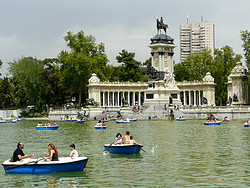

MADRID es la capital de España así como la ciudad española que más visitantes atrae. Con más de 4 millones de visitantes en 2014, Madrid se sitúa en la novena posición de Europa. El número de turistas de Madrid crece año tras año debido a una perfecta combinación de oferta cultural, monumental y de ocio.
Madrid ofrece innumerables lugares para visitar y rincones para perderse. Te presentamos las visitas imprescindibles en Madrid:
La puerta del Sol es una de las plazas más famosas de Madrid y en ella podréis encontrar algunos de los puntos y edificios más significativos de la capital.
Su construcción se llevó a cabo en varias etapas; comenzó con la construcción de la Casa de Correos a mediados del siglo XVIII y un siglo más tarde, entre 1857 y 1862, tomó su forma definitiva gracias a los arquitectos Lucio del Valle, Juan Rivera y José Morer.
Ya en el siglo XX se añadieron los jardines, la fuente y se incrementó la zona peatonal.
La Plaza Mayor está situada en el corazón de Madrid a pocos metros de la Puerta del Sol y del Palacio Real. La plaza mide 129 metros de largo por 94 metros de ancho y está rodeada por soportales y edificios de tres plantas.
En la construcción de la plaza intervinieron varios arquitectos, entre los que destacan Juan de Herrera y Juan Gómez de Mora, ya que fueron los verdaderos creadores. Con el paso del tiempo y los distintos incendios sufridos, la Plaza Mayor ha sido reconstruida y reformada en varias ocasiones.
En el siglo XV la Plaza Mayor recibia el nombre de Plaza del Arrabal, posteriormente la Plaza Mayor ha adoptado otros nombres como: Plaza de la Constitución, Plaza Real y Plaza de la República. El nombre actual se conserva desde finales de la Guerra Civil.
El Retiro es el parque más importante de Madrid desde su apertura al público en 1868. Su nombre completo es Parque del Buen Retiro. En el Retiro hay cientos de rincones que visitar y actividades que disfrutar: espectáculos de marionetas, músicos, lectores de manos, adivinos y videntes son algunas de las distracciones habituales.
Puntos de Interés en El Retiro: